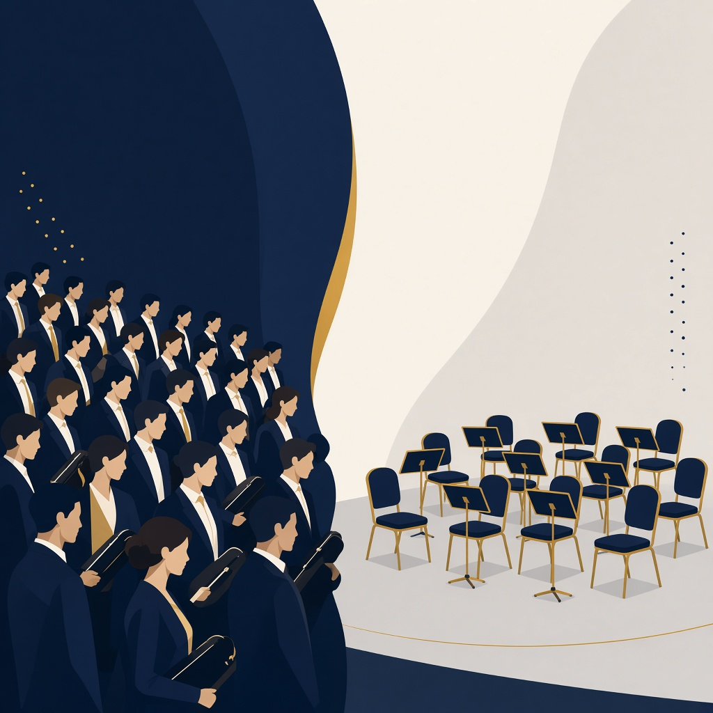
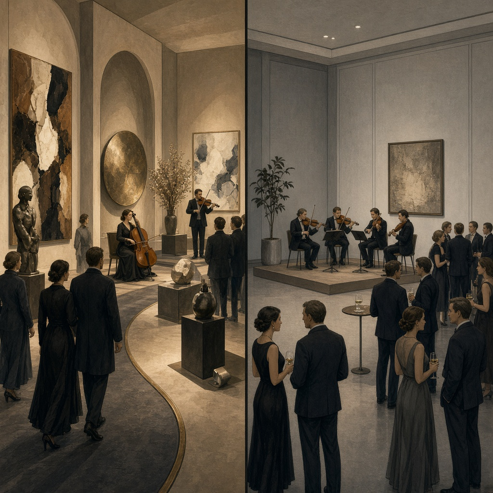

Slide 1 · Supply vs seats

Conservatories scale output. Auditions don’t.

Conservatories scale output. Auditions don’t.

Same budget. Two nights. One remembered.
Depth + four literacies (no MBA cosplay)
Ambassadors & pop-ups (opinion, not footnotes)